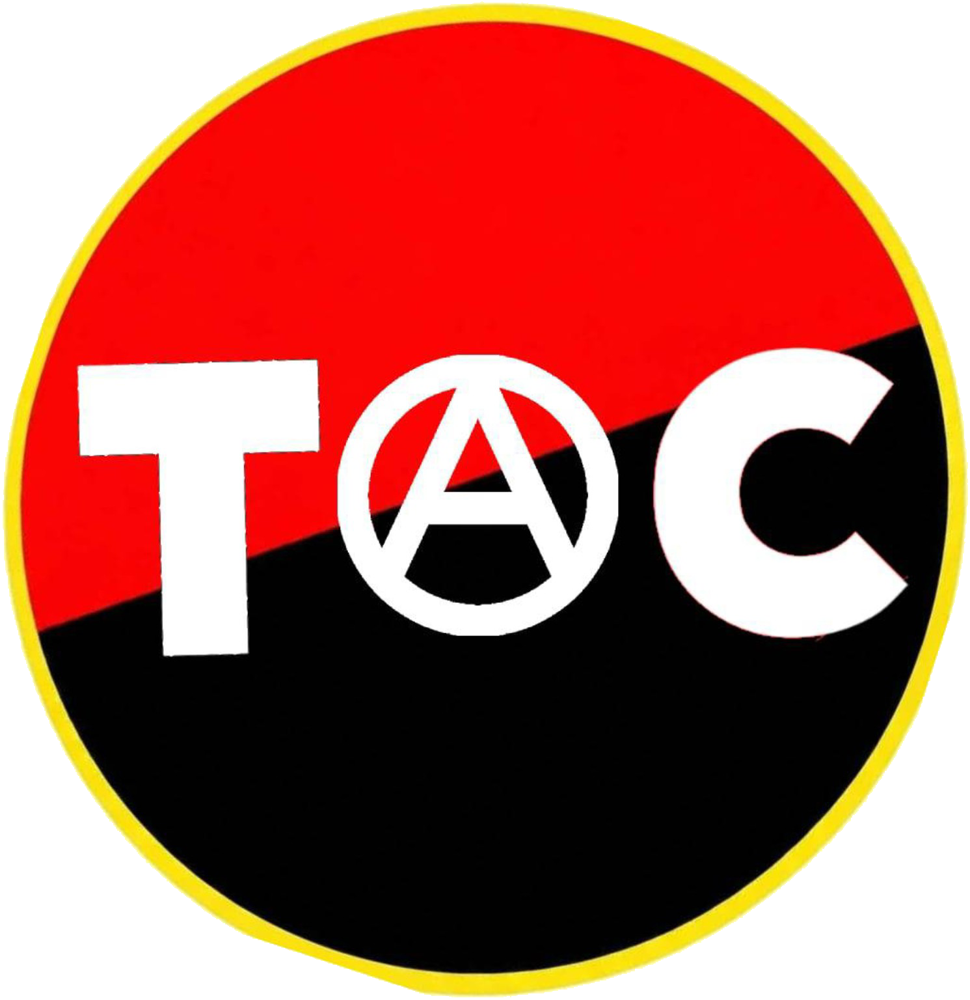
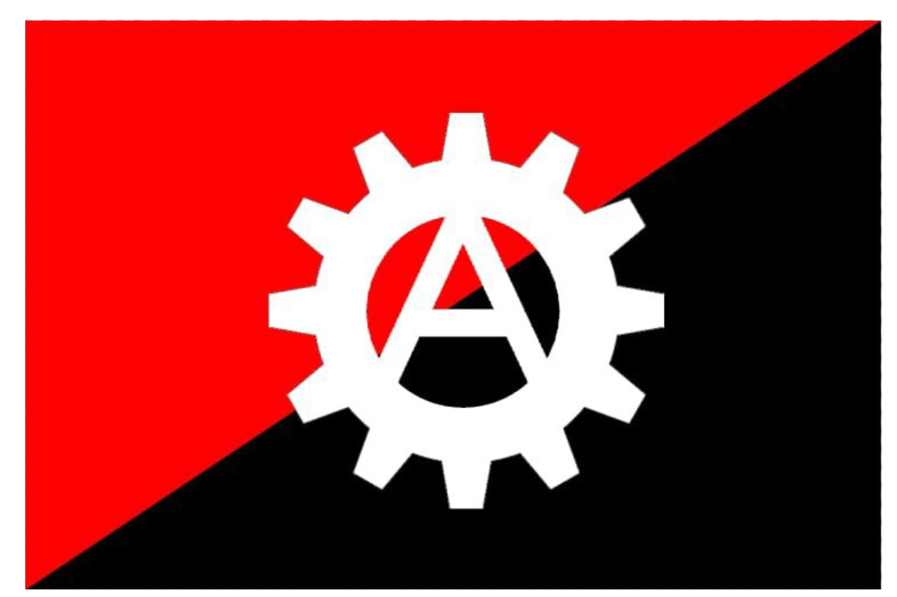
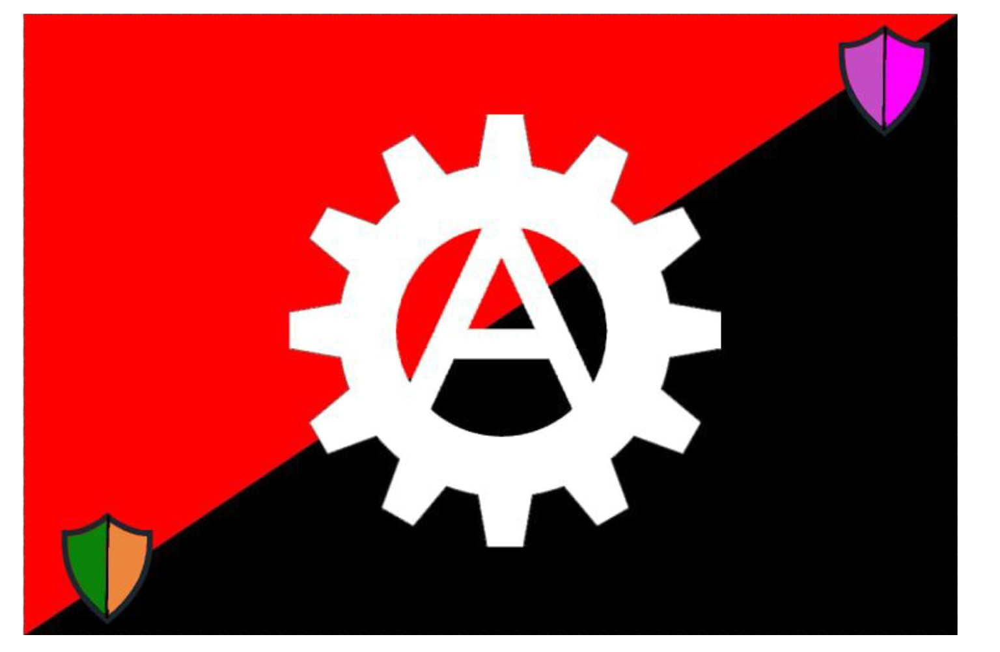

Foundational Charter
Purpose, membership, confederal structure, shared principles and the rights and responsibilities of participants.
Official source file · charter and manifesto combined
THE ANARCHISTAUTONOMY · SOLIDARITY · FEDERATION
The Anarchist Confederation connects autonomous communities, collectives, labour unions and individuals through voluntary cooperation, direct participation and mutual aid.
A confederation of autonomous participants — not a centralised ruling body.
TAC · MUSIC & SOLIDARITY
The official anthem of The Anarchist Confederation. Listen using the player below.
Playback is controlled by the visitor.TAC is a decentralised, voluntary association of independent digital communities, physical collectives, labour unions and individuals committed to libertarian socialism, anti-authoritarianism and mutual aid.
The confederation exists to enable connection and collective action while respecting the autonomy of its participating nodes and members.
The adopted charter and manifesto are TAC’s authoritative foundational texts. This page is an introduction, not a replacement for those documents.
Purpose, membership, confederal structure, shared principles and the rights and responsibilities of participants.
Official source file · charter and manifesto combinedThe movement’s political aims and commitments, published in the same supplied source file as the foundational charter.
Official source file · combined documentProcedural guidance for the Council’s defined duties, without turning it into a command authority over autonomous nodes.
Supplied official procedure documentThe supplied summary of TAC’s vision, mission and core values.
Supplied reference documentThese links serve the supplied PDFs directly. Confirm official version numbers, adoption dates and any publication restrictions before treating this page as a formal document register.
Participating nodes retain their internal self-organisation and decision-making.
Cooperation is built through consent, shared commitments and negotiated agreements.
Resources, knowledge, labour and practical support are shared to meet collective needs.
Delegated responsibilities are limited by their mandate and subject to transparent review.
Discover participating nodes, collectives, unions and partner projects. A directory entry should describe a group’s own work and contact preferences; it must not imply that the confederation commands it.
Explore the directory ↓Directory structure is ready for verified entries. No fictional member groups or contact details are included in this prototype.
Entries will be added after the participating group has confirmed its information and what it wishes to make public.
These listings distinguish official membership from affiliate relationships. Each organisation remains autonomous; listing does not imply command, ownership or control by TAC.
Official member organisation of The Anarchist Confederation.
Visit Discord ↗Affiliate organisation connected through cooperation while retaining its own autonomy.
Visit Discord ↗Directory entries should be maintained with each organisation’s consent and updated when its affiliation status changes.
Use these channels to follow updates, contact the movement or enquire about membership and affiliation.
The General Assembly is the federation-wide deliberative forum for active membership. Autonomous nodes retain their own self-organisation. The Supervision Council performs the procedural and liaison duties defined by the charter; it is not a central command over nodes.
See transparency principles →A conceptual relationship, not a hierarchy of command.
Supplied official artwork is used as provided. The mutual-defence variant is shown as a distinct flag variant, not as a replacement for the primary flag.


Use this space to find collaborators, share resources and propose projects without centralising control over local work.
Shared work proposed and maintained by the people and groups involved.
Voluntarily contributed skills, materials, guides and support offers.
Bring an idea to the relevant autonomous group or agreed confederal process.
Project listings and submissions will be enabled after the CMS workflow is configured.
Only approved announcements will appear here. This prototype contains no fabricated news or decision records.
The CMS should support draft, review, approval and correction history, with author permissions defined by collective agreement.
Publish decisions and administrative records that are designated public under TAC’s rules. Protect personal information, private correspondence and security-sensitive details.
Interested in joining or partnering with TAC? Start with the charter and contact the confederation. Formal applications must be handled through an agreed process, with clear criteria and a record of decisions.